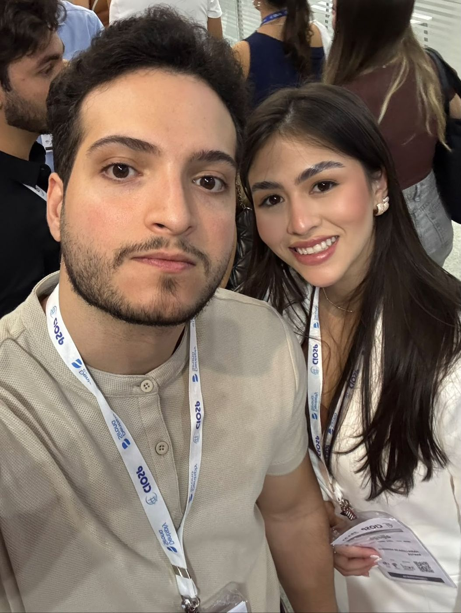
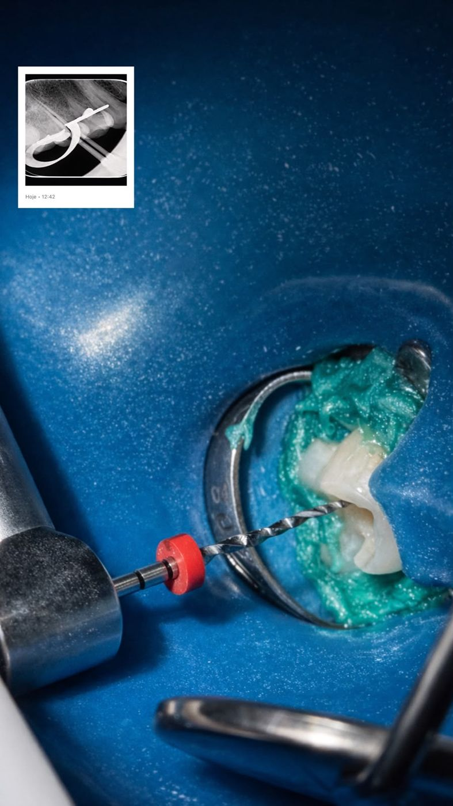
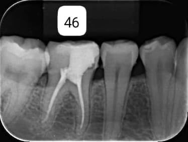
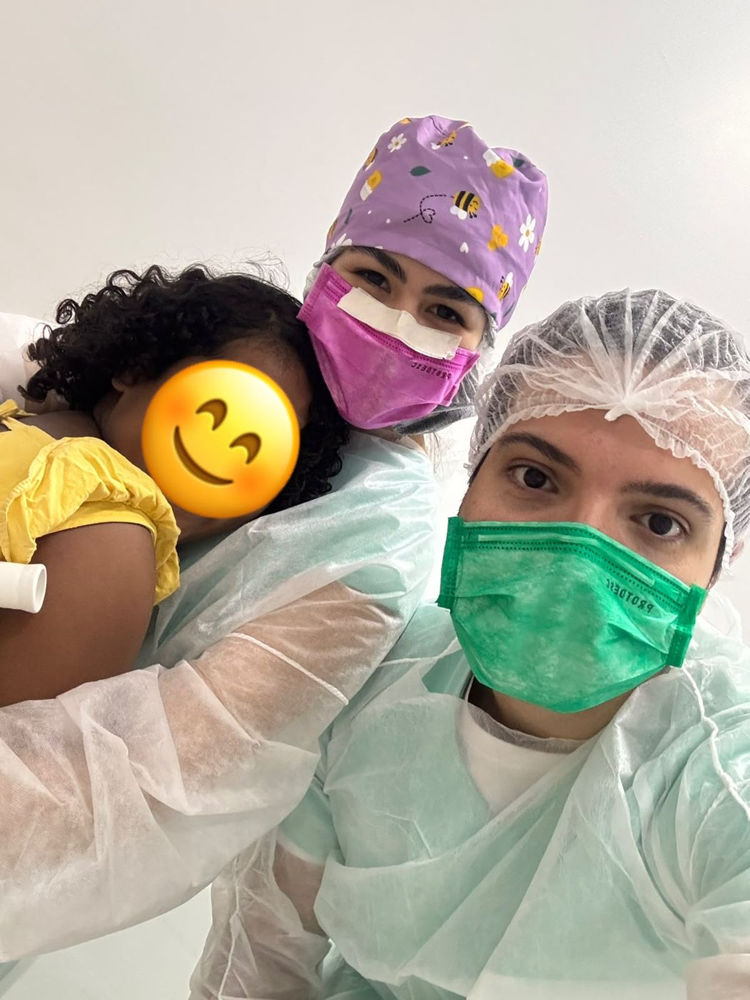
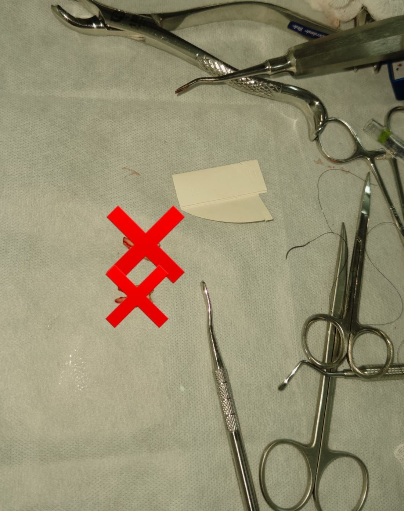

Deolindo Neto + Maria LuísaTeresina — PI · @duodonto.pi
Somos acadêmicos de Odontologia e criamos a DuoOdonto para compartilhar nossa formação, nossa rotina clínica e as possibilidades de atendimento dentro do ambiente universitário.
Duas personalidades diferentes, uma mesma paixão pela Odontologia.
A DuoOdonto nasceu dentro da nossa jornada acadêmica. Os atendimentos acontecem no ambiente universitário, conforme disponibilidade e critérios da instituição, dentro das atividades clínicas e sob supervisão profissional.
Durante nossa formação clínica, temos contato com diferentes procedimentos odontológicos realizados dentro do ambiente acadêmico e sob supervisão.
A disponibilidade depende das atividades acadêmicas, avaliação do caso e critérios da instituição.
Registros da nossa prática acadêmica, sempre sob supervisão, sem expor pacientes.




Peça o link de acesso exclusivo e a gente envia direto pelo WhatsApp.